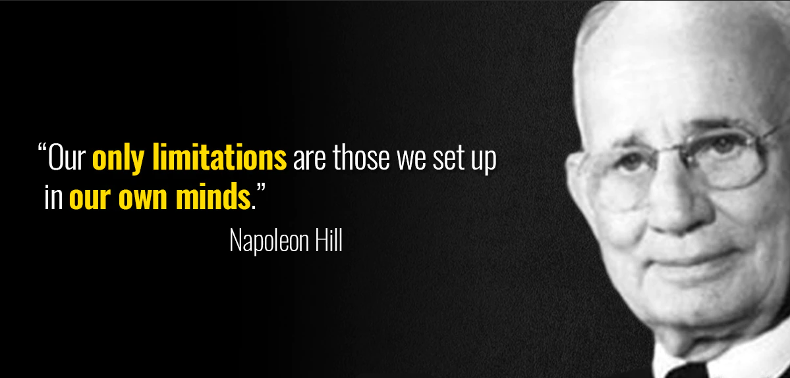

3D PRINTING
First, what is Disruptive Technology?
Disruptive Technology is an innovation of a new system and/or tools that displaces existing ones because it significantly changes the people’s lifestyle, and changes the way industries, organizations, or businesses operate.
Throughout the past decades, there have been major events that led people to look for change and innovation. Some replicate existing models or try to upgrade inventions of the past, some take the road less traveled—they blow up the blueprint and iterate a new one until they make it. Lo and behold, the time has finally come to face true liberty and the terrifying reality of change and innovation. It is to disrupt and move away from the recurring means of evolution and development
Disruptive technology brings a revolutionary change to challenge the systems of society. And as dramatic as it may sound, this very idea of change has led people to strive and break through the path of the famous less-traveled road. This made sense as time passed by, for the reason that disruptive technologies have already proven its impact on people's lives.
DEFINING 3D PRINTING
“It allows goods to be produced in lower quantities… closer to the point of consumption. That’s going to radically change the supply chain.” Alan Amling, UPS VP of Corporate Strategy (2016-2019)
3D Printing uses less labor, materials, and energy at a remarkable speed. It has disrupted the flow of goods and old production methods used for decades. It was for creating niche products only, but it is diversifying more and more as the years pass. It can disrupt factories, production lines, manufacturing processes, and supply chains since old methods cannot handle geometric objects—which 3D Printing excels at. Spare parts are another 3D printing specialty which are helpful in engineering, architectural, and other mechanical arenas.
“Fast Radius”, a 3D Company in Germany, is aiming to completely revolutionize global supply chains which are mainly done by air, sea, and land. With 3D Printing, a 4th modality of logistics is born: moving parts through the Internet. Its advantages include the fact that transport routes are shorter, there are no specialized factories, it’s all fully-automated through a global printing network. Products may not be massively produced, but printed in accordance to demand, which is going to be more economical. Because of this, 3D Printing is also threatening to disrupt logistical companies.
Some airline companies are using 3D-Printed parts, such as door shafts, which are lighter. This saves fuel consumption and CO2 commissions. One less kg of weight already saves half a million liters of fuel in 30 years. As of now, conventional mass production methods can still produce components more quickly and cheaply than 3D can, especially those in Asia. 3D Printing is still mainly a prototypal / customization business. It will take time to impactfully disrupt the manufacturing and production world.
3D Printing only accounts to a small percentage of global manufacturing sales: in 2017, out of the industry’s $12 trillion only $7.3 billion were from 3D Printers. It’s projected to rise in the next ten years to $100 billion dollars.
3D Printing Possibly ‘BOOMING’ in the Philippines
In the Philippines, 3D printing distributors garnered increment of sales due to creators delving deeper into such technology as restrictions evenly alleviate the trajectory of local industries; One of the many reasons why this technology invokes larger audiences is because of its function encompassing an interdisciplinary application that one can use for their respective industry and its respective form. As innovations become more exposed to the general public, the global market seemingly foresees space for more opportunities by year 2027. Additionally, 3D printers become more affordable as time passes by which creates a possibility of technological influence among industries especially in the manufacturing component.
[Footnote]
References
DW Documentary. (2020). The 3D printing revolution | DW Documentary. Retrieved from: https://www.youtube.com/watch?v=k0poVtBhIsQ
How 'disruptive technology' can lead to societal impact. (2021). ASU News. https://news.asu.edu/20210316-solutions-how-disruptive-innovation-can-lead-societal-impact
Philippine Daily Inquirer. (2022, April 5). Filipino firm: 3D printing, an untapped potential for businesses. Retrieved December 11, 2022 from https://business.inquirer.net/345304/filipino-firm-3d-printing-an-untapped-potential-for-businesses
Scott, G. (2022, April 2). Disruptive Technology: Definition, Example, and How to Invest. Investopedia. https://www.investopedia.com/terms/d/disruptive-technology.asp